Markion User Guide
Markion replaces Chrome’s bookmark manager with a fast, keyboard-first workspace. It helps you find bookmarks in a heartbeat, reorganize them, clean them up without losing anything and keep them in order. Everything runs on your device.
Getting started
After installing, Markion opens instead of chrome://bookmarks. You can also
open it with Ctrl+Shift+O, through Chrome’s menu
“Bookmarks and lists → Bookmark manager”, or with Alt+B (you can
change this shortcut in Settings). If Markion is already open, it switches to that tab
instead of opening a second one.
On the first start, a short introduction creates a first restore point, shows how tidy your collection is and lists the most important shortcuts. You can skip it with Esc.
You can open the introduction again any time: click ? at the top right and choose Show introduction, or press G then W.
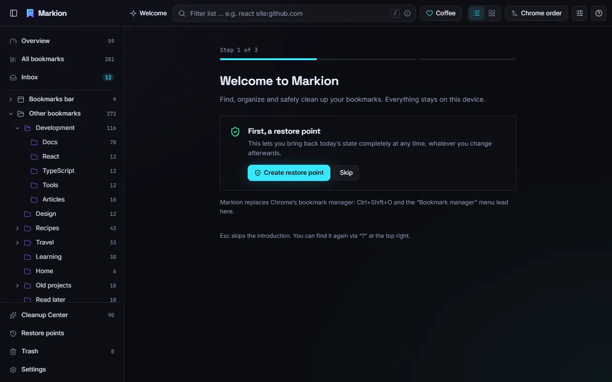
Markion works directly on Chrome’s bookmarks. There is nothing to import and nothing to sync: what you change in Markion is changed in Chrome, and what you change in Chrome shows up in Markion right away. Account bookmarks and device bookmarks appear side by side.
The workspace
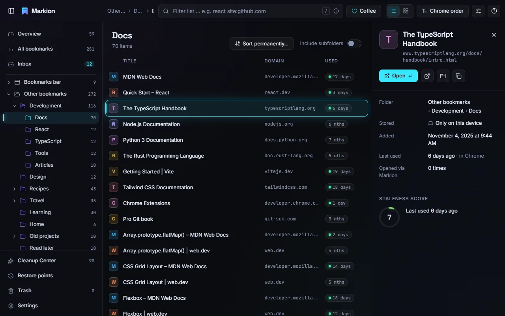
- Top bar: the path of the current folder, the search field, the Coffee button (see FAQ), list or card view, sorting, view options (columns, density) and the ? menu with this guide, the introduction and the shortcut overview.
- Left sidebar: Overview, All bookmarks, Inbox, your folders, and at the bottom the Cleanup Center, Archive, Restore points, Trash and Settings. Drag its edge to change the width.
- List or cards: switch with V. Sort by title, domain, date added, last use or staleness score; “Chrome order” keeps the order you see in Chrome.
- Detail panel: opens when you select a bookmark. It shows the folder, where it is stored (account or device), dates, how often you opened it through Markion and its staleness score.
Collapsed sidebar
Press [ or click the panel icon at the top left to collapse the sidebar. It shrinks to a narrow strip of icons, so you still reach every place with one click. Badges show new items in the inbox and the number of cleanup suggestions. Hover over an icon, or reach it with Tab, to see its name and shortcut. To see the folder tree again, press [.
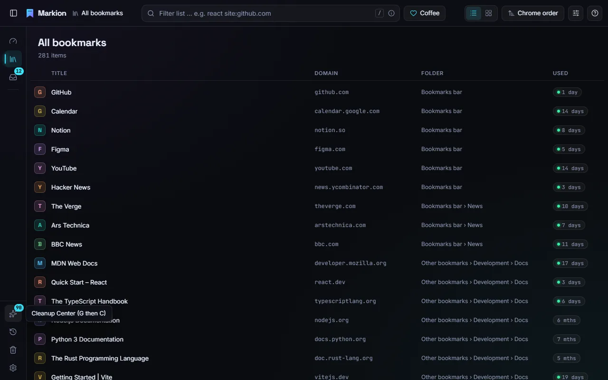
Finding bookmarks
Filter the list
Press / to jump into the search field at the top. The list filters as you type. Search is tolerant of small typos and looks at titles, addresses and folder names. Press ↓ to move into the results and Enter to open the first one. Esc clears the search.
Search syntax
Narrow the search with filters written as command:value, without a space
after the colon. Click the ⓘ icon in the search field to see them all;
clicking an example inserts it at the cursor.
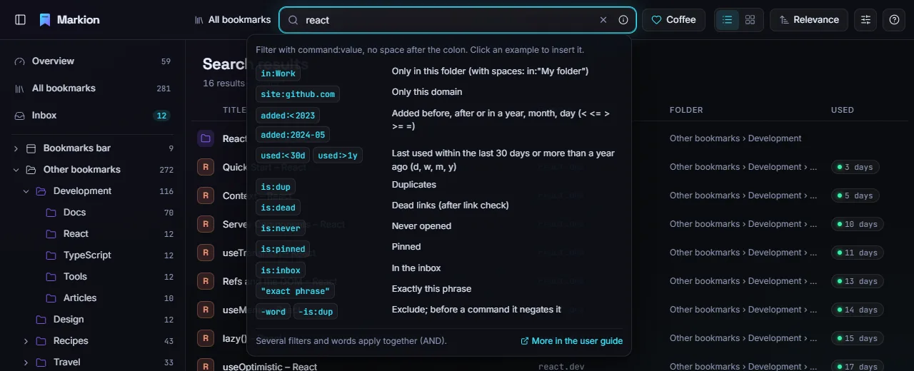
| Filter | What it does |
|---|---|
in:Work, in:"My folder" |
Only bookmarks in this folder. Use quotes when the name contains spaces. |
site:github.com |
Only this domain; www. is ignored. |
added:<2023, added:2024-05,
added:>=2024-05-17
|
By the date added: a year, a month or a day, with <,
<=, >, >= or =.
|
used:<30d, used:>1y |
By last use: within the last 30 days, or more than a year ago. Units are
d (days), w (weeks), m (months) and
y (years).
|
is:dup |
Duplicates: the same address is bookmarked more than once. |
is:dead |
Dead links, found by the optional link check. |
is:never |
Provably never opened. |
is:pinned |
Pinned bookmarks and folders. |
is:inbox |
Items in the inbox. |
"exact phrase" |
Exactly these words in this order. |
-word, -"phrase", -site:…,
-is:dup
|
Exclude a word or phrase; in front of a filter it negates it. |
Several words and filters apply together. For example,
react site:github.com used:>1y finds GitHub bookmarks about React that you
have not used for over a year.
Command palette
Press Ctrl+K to open the command palette from anywhere. Type a few letters and press Enter to open the bookmark, or Ctrl+Enter to open it in the background. The palette understands the same search syntax and has the same ⓘ help.
- Start with > to search actions, for example
>trash. - Start with / to search folders only.
- Press Tab on a result to see the actions for that bookmark, such as copy, move or edit.
- The empty palette shows recently used and frequently opened bookmarks.
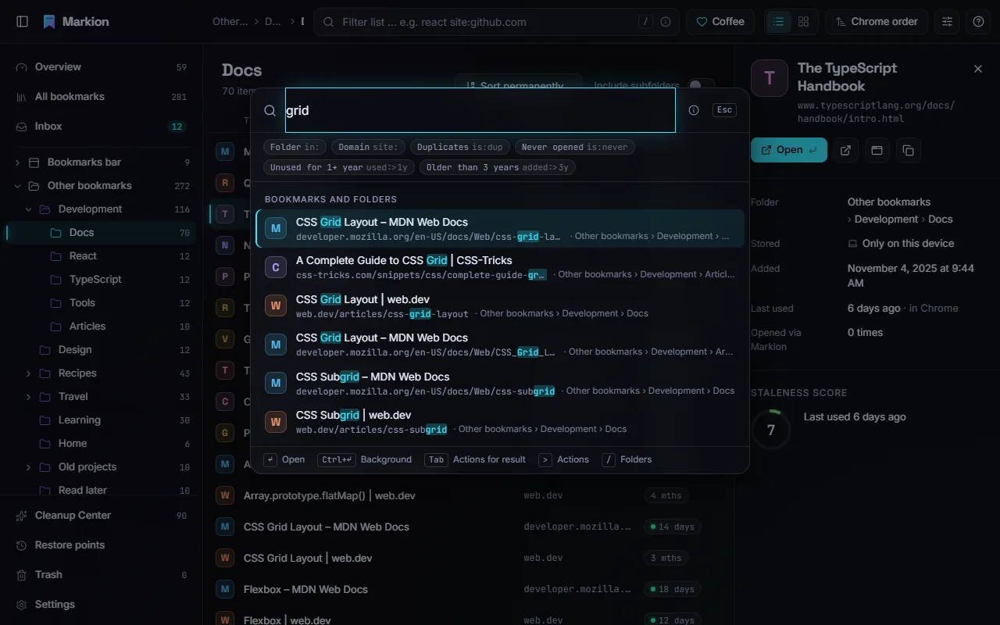
Pins
Press P to pin a bookmark or folder. Pinned items are easy to find with
is:pinned, and the Cleanup Center never suggests them.
Organizing
Select and move
- Move with ↑ ↓ (or J K). Extend the selection with Shift+↑/↓, toggle an item with Space, select everything with Ctrl+A. With the mouse, use Ctrl-click and Shift-click.
- Drag and drop items onto a folder in the tree or in the list. Hovering over a closed folder opens it after a moment. Esc cancels the drag.
- Press M to move the selection with the palette: type a folder name and press Enter.
- Ctrl+X and Ctrl+V cut and paste. Alt+↑/↓ moves an item up or down within its folder.
- Right-click (or Shift+F10) opens the context menu with every action.
Edit and create
- F2 renames a bookmark or folder or edits its address.
- N creates a new folder; Shift+N creates a folder from the selection.
- Shift+T cleans up titles (for example counters like “(3)” or a repeated site name), Shift+U removes tracking parameters from addresses. Both show a before/after preview first.
Folder tools
- Sort permanently (Shift+S) sorts a folder in Chrome itself, by title, domain or date. A preview shows the result before anything moves.
- Merge folder (Shift+M) moves the contents into another folder; the empty folder goes to the trash.
- Dissolve folder (Shift+D) moves the contents one level up.
- Archive (E) moves items into your archive folder.
Every one of these actions can be undone with Ctrl+Z. After each action, a message with an Undo button stays visible for 8 seconds.
Inbox and sorting assistant
The inbox collects bookmarks that still need a place: everything lying loose directly in “Other bookmarks”, plus everything you added since you last marked the inbox as reviewed. Bookmarks in the bookmarks bar, pinned items and the archive never land here. Open it with G then I; Shift+I marks everything as reviewed.
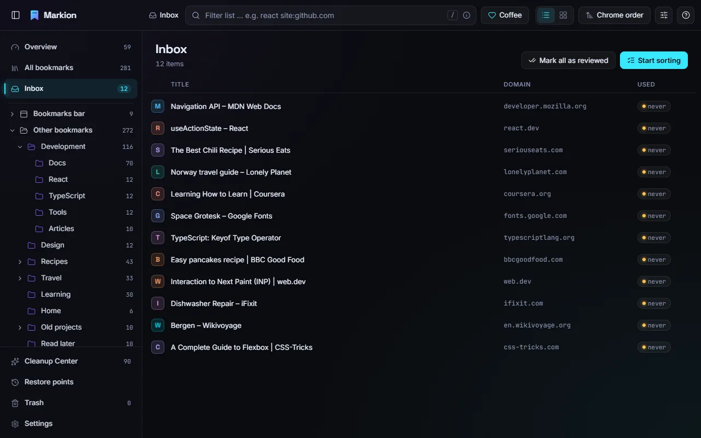
The sorting assistant (G then S) goes through the inbox one card at a time and suggests matching folders. The suggestions are computed on your device from the domains and words in your existing folders and your recent choices.
| Key | In the sorting assistant |
|---|---|
| 1–5 | File into suggestion 1 to 5 |
| / | Find another folder |
| A | Archive |
| D | Move to trash |
| S | Later (skip for now) |
| K | Stays here (it leaves the inbox where it is) |
| Z | Undo the last step |
| Esc | Back |
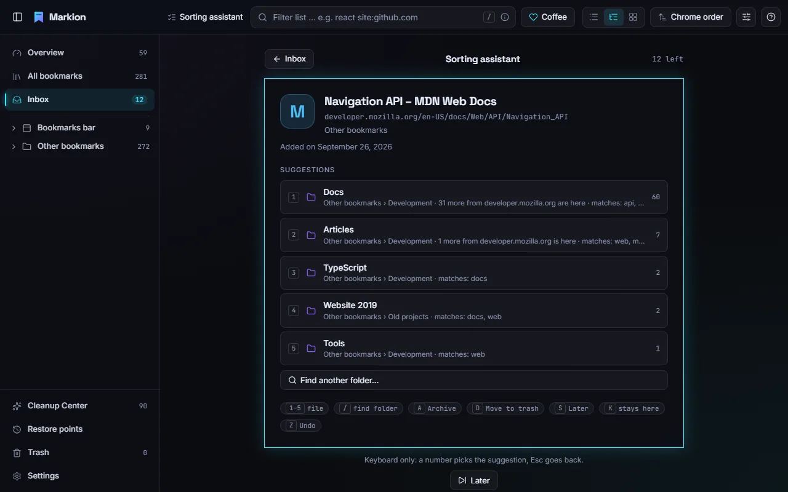
Cleanup Center
The Cleanup Center (G then C, or in the sidebar) finds bookmarks that are worth a second look and explains why. Nothing is deleted without you: you decide for each finding, and deleted items go to the trash.
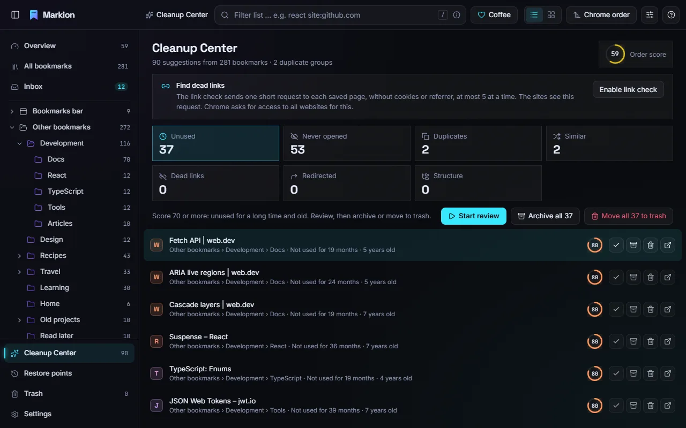
| Category | What it finds |
|---|---|
| Unused | Bookmarks with a staleness score of 70 or more: not used for a long time and old. |
| Never opened | In the profile for over three months and provably never opened. |
| Duplicates |
The same address, ignoring www., tracking parameters and anchors. The
best entry stays, the others go to the trash.
|
| Similar | Nearly identical addresses, such as a mobile version. Never merged automatically. |
| Dead links | The link check failed on two different days. |
| Redirected | The page redirected to the same new address on two different days. |
| Structure | Empty, nearly empty, same-named, very deep or overfull folders, each with a one-click fix. |
The staleness score
Each bookmark gets a score from 0 to 100. It rises the longer you have not used a bookmark, the older it is, and if it was provably never opened. “Last use” combines Chrome’s own record, opens through Markion and, if you allow it, your browser history. When Chrome has not tracked usage long enough to be sure, Markion says so and marks the suggestion as low confidence instead of claiming “never opened”.
Review
Press Enter on a finding (or click Start review) to go through the findings one card at a time.
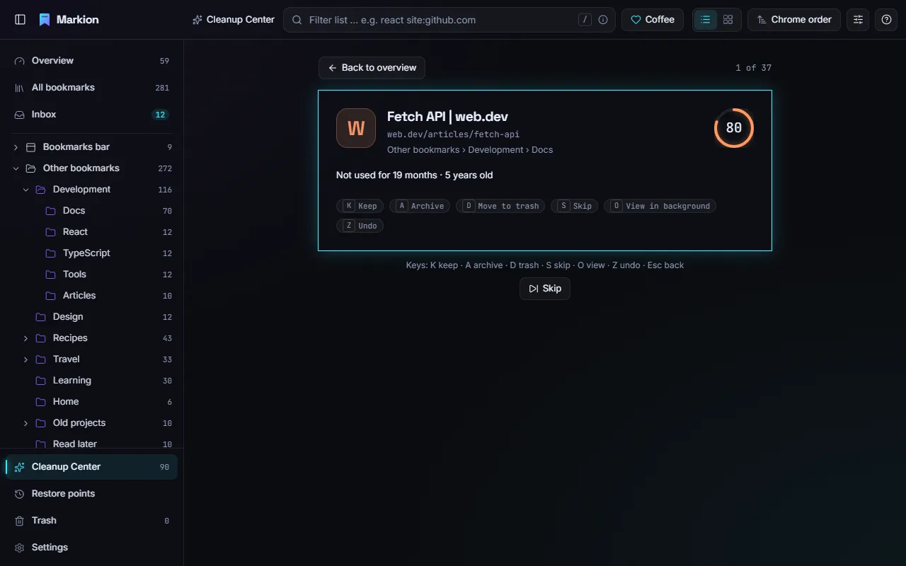
| Key | In the review |
|---|---|
| K | Keep: not suggested again for 6 months (adjustable in Settings) |
| A | Archive |
| D | Move to trash |
| S | Skip |
| O | View the page in a background tab |
| U | Use the new address (redirected links) |
| Z | Undo the last decision |
| Esc | Back to the overview |
The same keys (K, A, D, U, O) work directly in the list of findings. When you are done, Undo all reverts every decision of the session.
What is never suggested
Bookmarks in any bookmarks bar, items in pinned folders and bookmarks managed by your organization are protected and never suggested.
Link check (optional)
The link check finds dead links and redirects. It is off until you turn it on in the Cleanup Center or in Settings, and Chrome asks you for permission. It sends a short request to each page, without cookies and without telling the page where the request came from. A link counts as dead only after it failed on two different days; pages that ask for a login, block the request or time out count as “unknown”, not dead.
Overview
The overview (G then O) shows the order score, a number from 0 to 100 for how tidy your collection is, and tiles with key figures: total, folders, never opened, stale, duplicates, inbox and dead links. Click a tile to go to it.
The domain explorer lists every domain with its number of bookmarks. Enter filters the list by that domain, M selects all its bookmarks, A archives and D moves them to the trash.
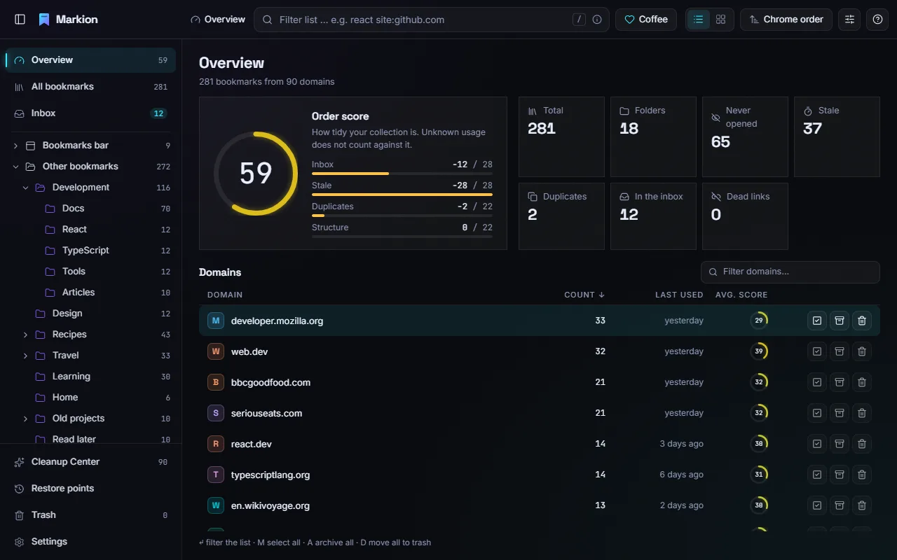
Safety net
- Undo and redo: Ctrl+Z and Ctrl+Shift+Z (or Ctrl+Y). At least the last 50 steps are kept, even after you close and reopen Markion. A bulk action counts as one step. If a bookmark was changed elsewhere in the meantime, Markion skips it and tells you instead of overwriting the change.
- Trash (G then T): everything you delete in Markion lands here and can be restored to its folder and position for 30 days (adjustable in Settings).
- Restore points (G then R): Markion saves a copy of all bookmarks daily when something changed, and always before bulk actions. They are kept for 14 days. You can restore everything or individual folders, and Save now creates one right away.
- Bulk actions: deleting more than 10 bookmarks or opening more than 20 tabs shows a preview first.
- Export (Shift+E): HTML (importable into any browser), JSON (a full Markion backup, restorable in Settings), Markdown or CSV.
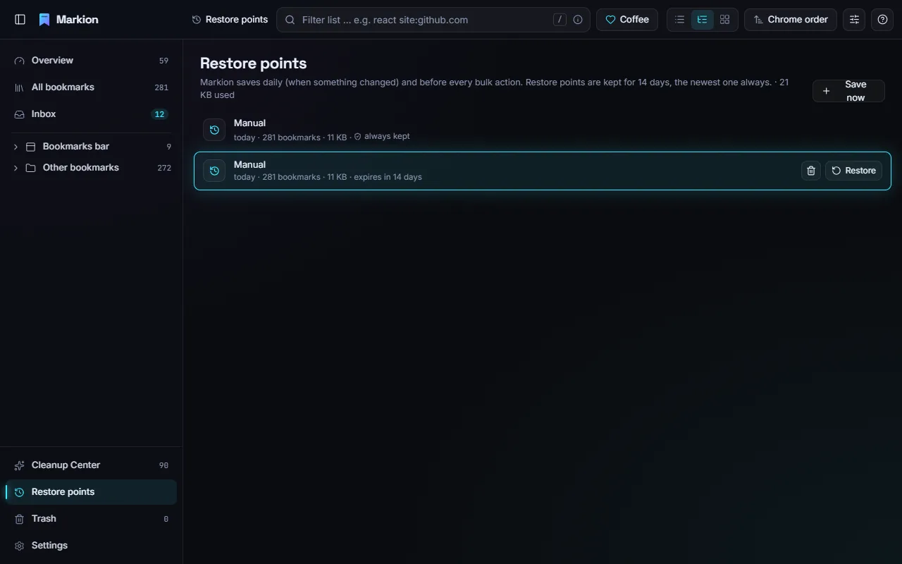
Settings
Open the settings with G then , or Ctrl+,.
- Cleanup: when a bookmark counts as unused or old, from which score it is suggested, how long “Keep” lasts, and the weights of the score. A preview shows how many suggestions you get with the new values. Reset restores the defaults.
- Inbox, archive and trash: which folders act as inbox and archive, and how many days deleted items stay in the trash.
- Behavior and appearance: whether Enter opens a bookmark in the current or a new tab; the effect level (auto, full, reduced, off), and the shortcut that opens Markion.
- Privacy: use your history as a usage signal, and the link check. Both are optional.
- Backup and introduction: download or restore a JSON backup, open the restore points or the introduction.
- About Markion: version, this guide, the privacy policy and the donation link.
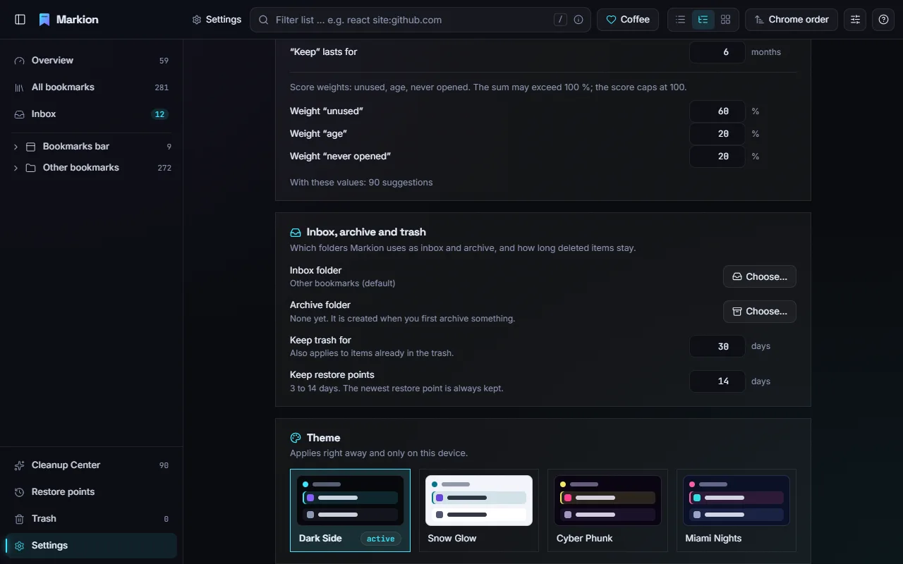
Keyboard shortcuts
Every action has a shortcut and an entry in the context menu. In Markion, press ? (or choose ? → Shortcuts) to see this list. “G then C” means: press G, release it, then press C. On a Mac, use ⌘ instead of Ctrl.
Go to
| G then A | All bookmarks |
| G then O | Overview |
| G then I | Inbox |
| G then S | Start sorting (sorting assistant) |
| G then C | Cleanup Center |
| G then R | Restore points |
| G then T | Trash |
| G then , · Ctrl+, | Settings |
| G then W | Show introduction |
| G then H | Open this user guide |
| ? | Keyboard shortcuts |
| Shift+I | Mark the inbox as reviewed |
General and view
| Ctrl+K | Command palette |
| / | Filter the list (search field) |
| Ctrl+Z | Undo |
| Ctrl+Shift+Z · Ctrl+Y | Redo |
| V | List or cards |
| [ | Collapse or expand the sidebar |
Moving around
| ↑ ↓ · J K | Move |
| Shift+↑ Shift+↓ | Extend the selection |
| Space | Select or deselect |
| ← → | Expand and collapse folders in the tree |
| Backspace | Go to the parent folder |
| Esc | Clear the selection, close a panel |
Bookmarks and folders
| Enter | Open |
| Ctrl+Enter | Open in background tab |
| Shift+Enter | Open in new window |
| F2 | Edit |
| N | New folder |
| Shift+N | Folder from selection |
| M | Move … |
| Ctrl+X | Cut |
| Ctrl+V | Paste |
| Alt+↑ | Move up |
| Alt+↓ | Move down |
| Ctrl+C | Copy URL |
| Ctrl+Shift+C | Copy as Markdown |
| Shift+E | Export … |
| Shift+T | Clean up titles … |
| Shift+U | Clean up URLs … |
| Ctrl+A | Select all |
| P | Pin or unpin |
| Shift+M | Merge folder … |
| Shift+D | Dissolve folder |
| Shift+S | Sort permanently … |
| E | Archive |
| Delete | Move to trash |
The Cleanup Center review and the sorting assistant have their own single-key shortcuts, listed in their sections above.
Privacy
Markion has no account, no server, no analytics and no ads. Your bookmarks, usage data, trash, restore points and undo history stay on your device. Markion makes no network requests at all unless you turn on the optional link check. Website icons come from Chrome’s own local cache. Links to this guide, the privacy policy and the donation page open only when you click them.
Details are in the privacy policy.
FAQ and troubleshooting
Why does Markion say it cannot be sure a bookmark was never opened?
Chrome only records when you open a bookmark from its bookmarks bar or menu, and only since a certain date per profile. Opens from the address bar do not count. Markion counts its own opens and can use your history if you allow it. For bookmarks older than Chrome’s records, Markion marks suggestions as low confidence. In Settings → Privacy, turning on “Use history as a usage signal” makes this more accurate.
How do I get Chrome’s own bookmark manager back?
Disable or remove Markion in chrome://extensions. Your bookmarks stay
unchanged, because Markion always works on Chrome’s bookmarks.
I deleted something by mistake.
Press Ctrl+Z, or open the trash (G then T) and restore it. For larger mistakes, a restore point (G then R) brings back an earlier state of whole folders or the entire collection.
Does Markion sync across devices?
Your bookmarks sync through Chrome as usual. Markion’s own data, such as pins, “keep” decisions, the trash and restore points, stays on each device.
What is the Coffee button?
Markion is free. If it makes your day a little easier, the Coffee button at the top opens a page where you can support its development with a small donation. It is entirely optional.
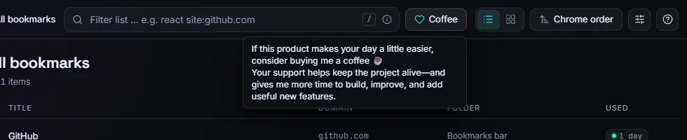
Where do I find this guide in the app?
Click ? at the top right and choose User guide, or press G then H. It is also linked in Settings → About Markion.
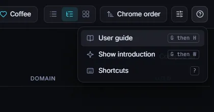